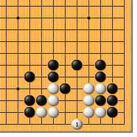
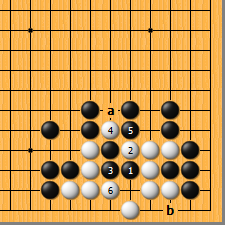
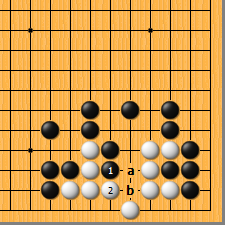
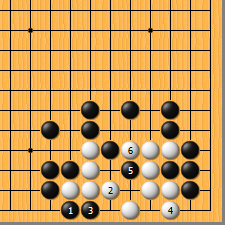
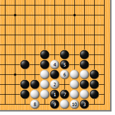
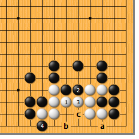
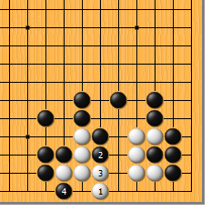

|  |  | |
| 图1 白1尖，是不易察觉的好手。对此，黑可以试试种种手段……
| 图2 黑1如尖，白用最保险的2、4、6滚打包收即可。由于提三子有一眼，黑必须a位提，白b位立，就此净活。 | |
|
 |
 | |
图3 黑如1位冲，白2位挡住即可。黑a拐时，白b的粘是先手，活棋没有问题。 | 图4 最厉害的黑1的扳。白要小心，切不可随后于3位挡，否则黑2位先手一点，白顿死。白2虎，是形状上的要点，黑如3位爬，白4立，黑5尖时白6挤，还是净活。黑1如于4位扳，白还是2位虎。
| |
|
 |
 | |
图5 再来看看黑1的直接点。这也是很厉害的一招，白2必断，黑3再扳，白于4、6位先手吃一子再说。黑7长时，白8立，黑9拐，白10粘，结果是白后手双活。 | 图6 白1粘是最普通的一手，然而在这里不行。黑2顶，白如3位粘，黑4位扳或a位扳白均不活。白3如于b位虎，黑c位透点，俟白3位粘后，再于4位扳，白也不活。
| |
|  | 您的高见 | |
图7 同样是尖，不能尖错地方。白如1位尖，黑2先手一冲，白3粘时，黑再4位扳，白净死。要注意利用对方的弱点去做活，切忌随手。 |